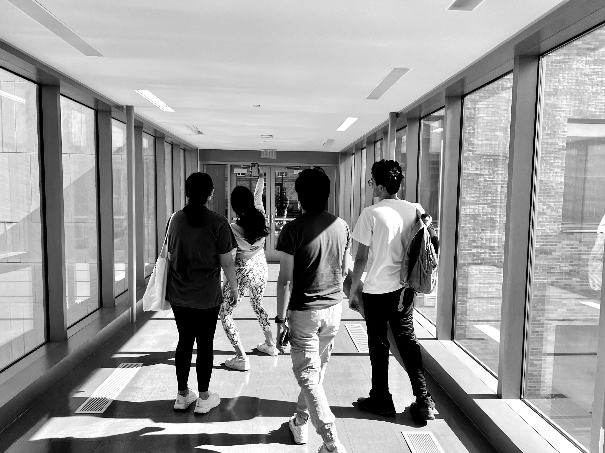

Values
Values
 Work
Work
 About
About
 Audio
Audio
VDS 2.0
Student led system for undergraduate research.

A Spontaneous Redesign.
VDS 2.0 not only reimagines the undergraduate research experience from the ground up, but it also offers insights into the spontaneous redesign of an organization. Explore how a group of future biologists tackled challenges in education and research. And discover the principles they developed and the outcomes of its implementation.
Implemented Spring 2023
VDS Redesign
Growing pains
Something had to be done.
Protocols quickly grew outdated
Materials were running low
Class size was increasing
Started in a closet
The project began with a simple thought in a supply closet: 'If I had written this, we wouldn't need extra pipette tips.'
I had a new protocol written by 3 AM that same night.
I had a new protocol written by 3 AM that same night.
Recruitment
I sent over the draft to my research educator and got an interesting email back: 'more of this.' I knew what that meant.
The scope of the redesign would soon require an entire team. And the following year, I earned the authority to direct one.
The scope of the redesign would soon require an entire team. And the following year, I earned the authority to direct one.
First Meeting
Committees, roles, and timelines were yanked out of the first meeting
To the right was one of three committee documents
Finally, problems were being discussed, and we had a plan.

Articulate the primary functions
We divided our research stream into three sections: wet lab, virtual, and lecture.
Wet lab and virtual oversaw the redesign of 80+ protocols and rethought research flows. Lecture committee handled all student communication and support materials for the other two committees. Timelines, content, and course policies were subject to deliberation by everyone.
Wet lab and virtual oversaw the redesign of 80+ protocols and rethought research flows. Lecture committee handled all student communication and support materials for the other two committees. Timelines, content, and course policies were subject to deliberation by everyone.
Electing heads
Committee heads were elected by the entire team day 1. The redesign was a voluntary (and enormous) effort. Each needed the most competent leader to make sure deadlines were met.
It's still important that less competent individuals sat in committee meetings. Their feedback proved the most beneficial, especially when drafting protocols and policies.
It's still important that less competent individuals sat in committee meetings. Their feedback proved the most beneficial, especially when drafting protocols and policies.
Jumpscare.
Honestly horrifying.
To the right, the current state of our 'better' protocols
Think for
Busy people who need to skim
We all want to perform research, but we're still busy students.

Useability over Magic
The team was tasked with redesigning over 80 documents with a fast-approaching next cohort, leaving little room for magic.
Each committee adopted their own basic design system, placing emphasis on narrative text to make documents more inviting and foster 'big picture' thinking.
Each committee adopted their own basic design system, placing emphasis on narrative text to make documents more inviting and foster 'big picture' thinking.
Defend every page
As I had the authority to reconsider every aspect of the stream, I allocated ample time for process discussions.
The committee heads engaged in a thorough reevaluation of the research flow, often adding or removing tens of pages at a time. By the project's conclusion, we successfully shortened the total protocol pages by over fifty, even while improving readability and clarifying explanations in the process.
The committee heads engaged in a thorough reevaluation of the research flow, often adding or removing tens of pages at a time. By the project's conclusion, we successfully shortened the total protocol pages by over fifty, even while improving readability and clarifying explanations in the process.
As students
We thought for a variety of majors and competency levels
Accessibility and ease of use were top priorities
MasterSheet
Every organization needs a MasterSheet.
Make it yours
Contact posters support live photos and video. Like magic.